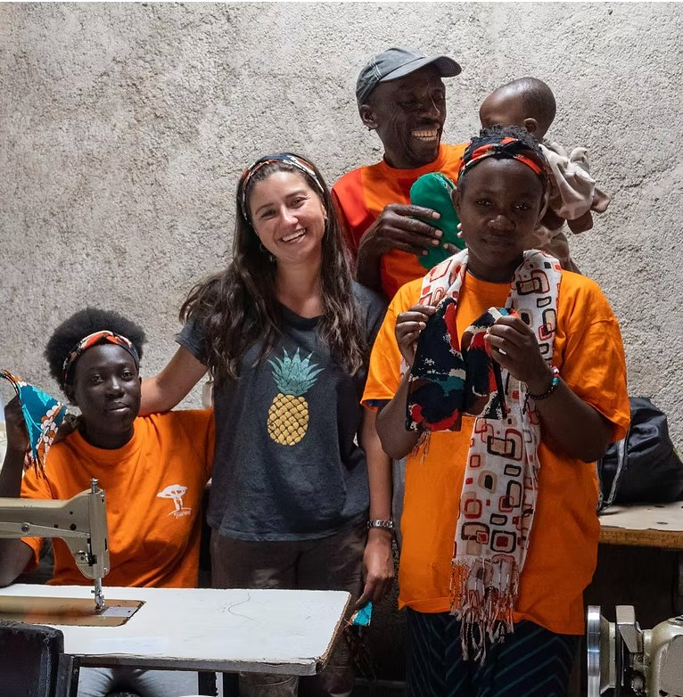
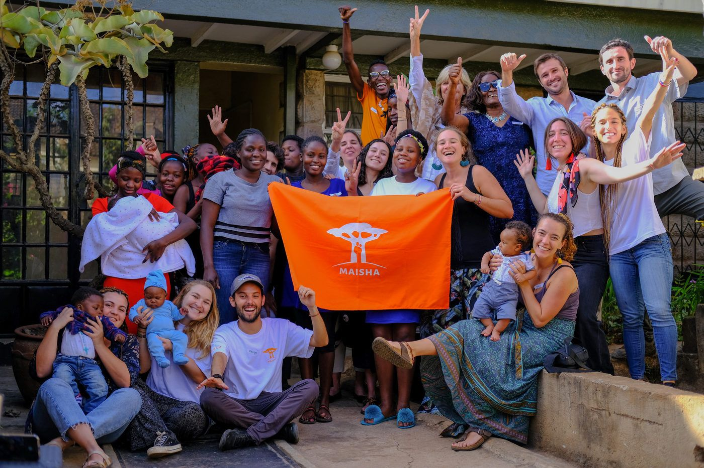
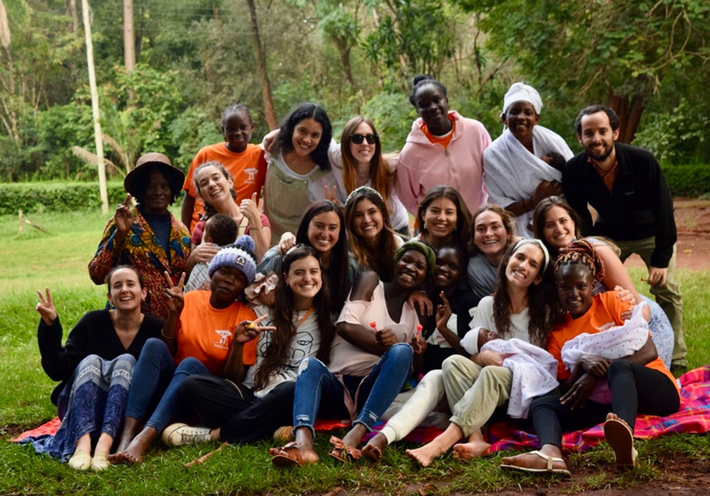
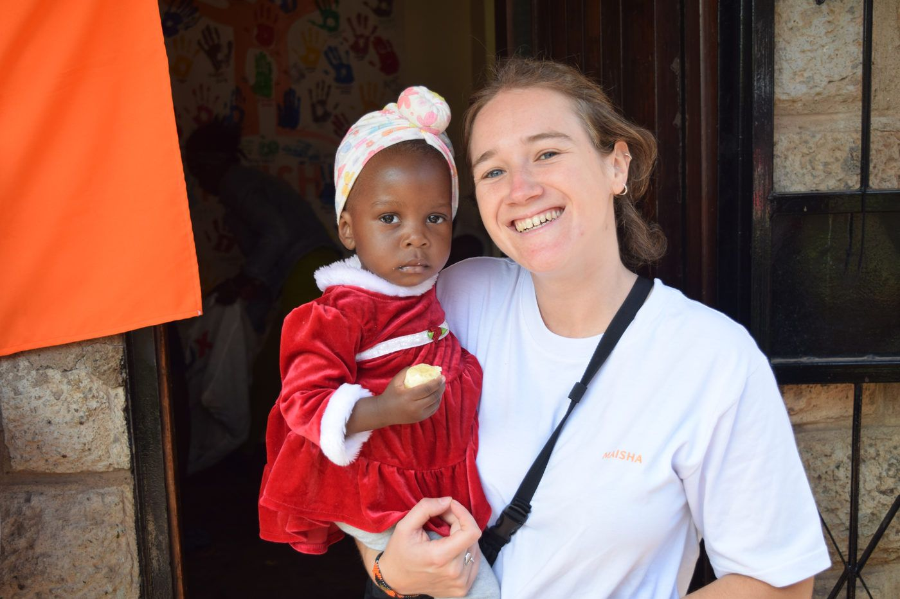
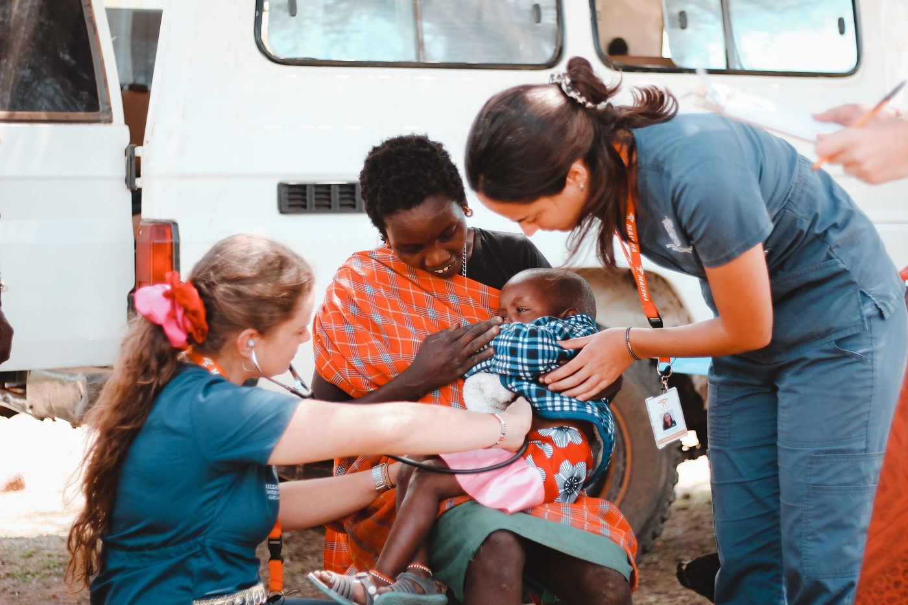
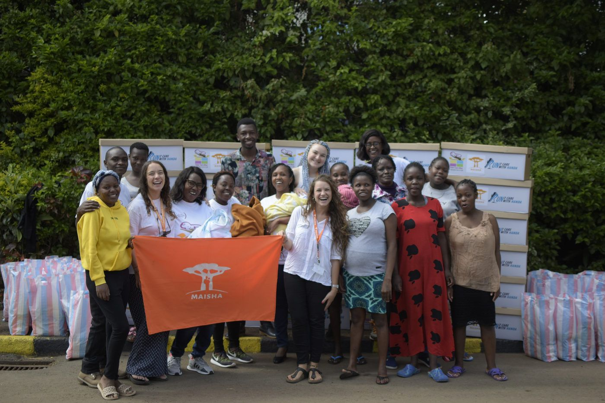
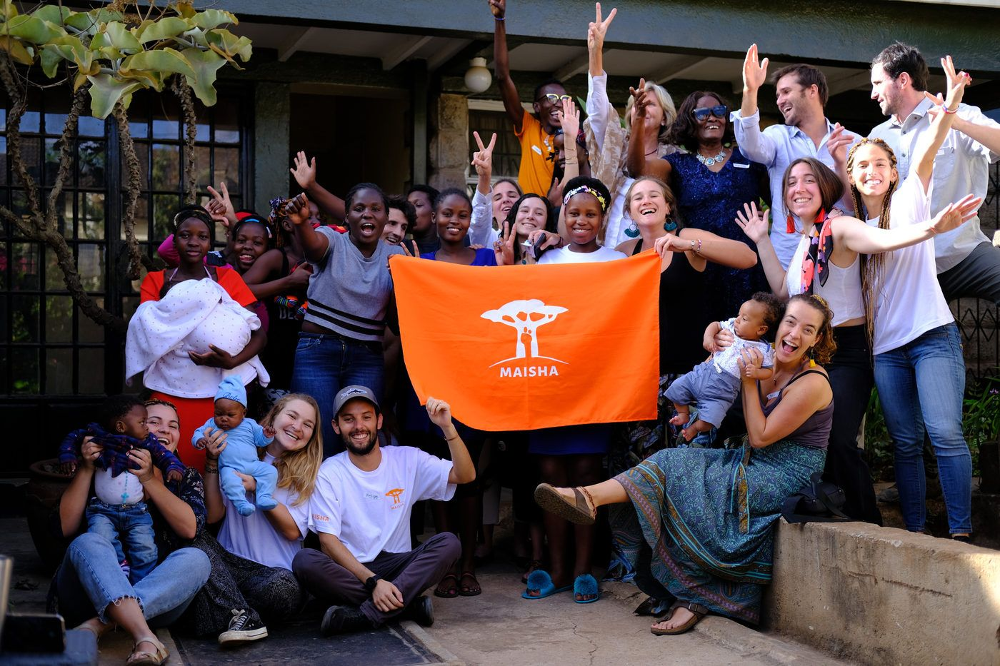

Involúcrate y sé voluntario
En Maisha trabajamos por el bienestar de mujeres embarazadas en contextos vulnerables en Kenia. Junto a voluntarios y socios entregamos herramientas, cuidado y espacios seguros para proteger la dignidad de cada mujer.

Voluntaria 2025Por qué sumarte
Un puente de esperanza
Al unirte, tu dedicación ayuda a estas mujeres a descubrir su potencial, empoderarse y construir un futuro mejor para ellas y sus familias. Puedes aportar desde la salud, la educación, la psicología, el diseño o cualquier otra área.
Cómo postular
Tres pasos para llegar a Kibera
Lee el boletín
Ahí está la información de cada programa y los requisitos para viajar a Kenia.
Descargar boletín →Completa el formulario
Cuéntanos quién eres y en qué programa te gustaría participar.
Ir al formulario →Conversemos
Nuestra coordinación de voluntariado te contactará para los siguientes pasos.





